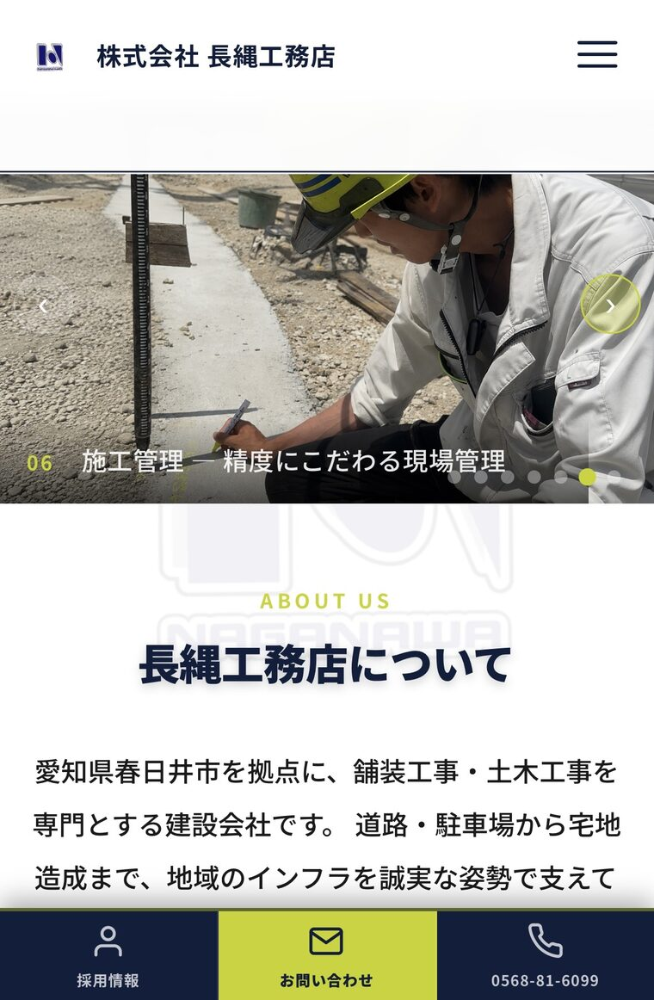

勤務先での実務経験
株式会社 長縄工務店
ホームページリニューアル・Web運用
建設会社のホームページリニューアルから、公開後の更新・SNS・採用広報まで担当しました。
※掲載許可をいただいて掲載しています。
WORKS
見た目だけでなく、どんな課題をどう整理して形にしたかをご紹介します。
勤務先で担当した業務であり、A@Web Worksとしての受託案件ではありません。

ホームページリニューアル・Web運用
建設会社のホームページリニューアルから、公開後の更新・SNS・採用広報まで担当しました。
※掲載許可をいただいて掲載しています。
店舗のInstagram運用と販促物の制作を中心に、来店・問い合わせにつながる情報発信をお手伝いしています。


※掲載許可をいただいて掲載しています。

※以下は、想定課題をもとに制作した自主制作サンプルです。